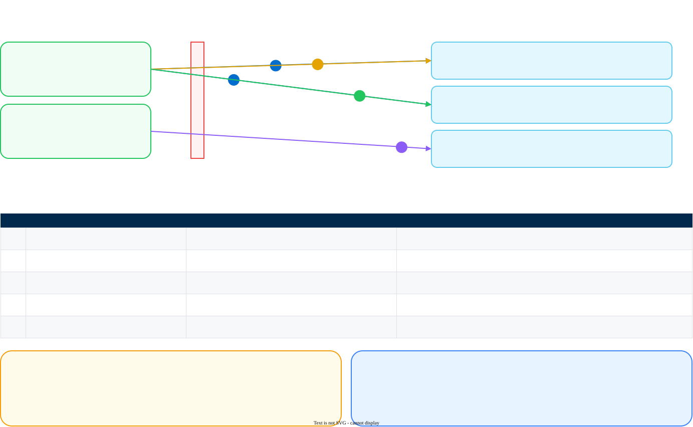
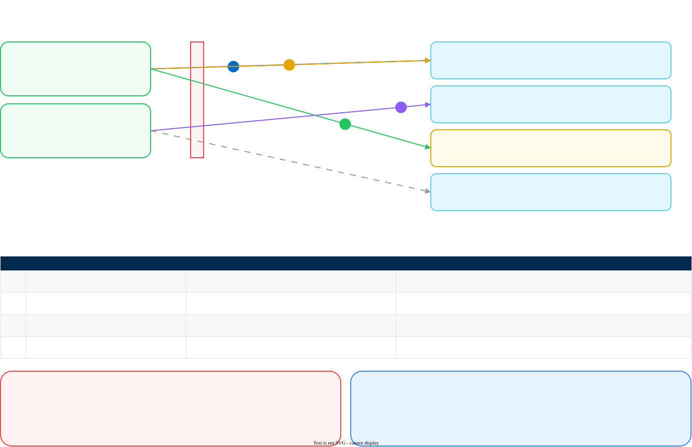
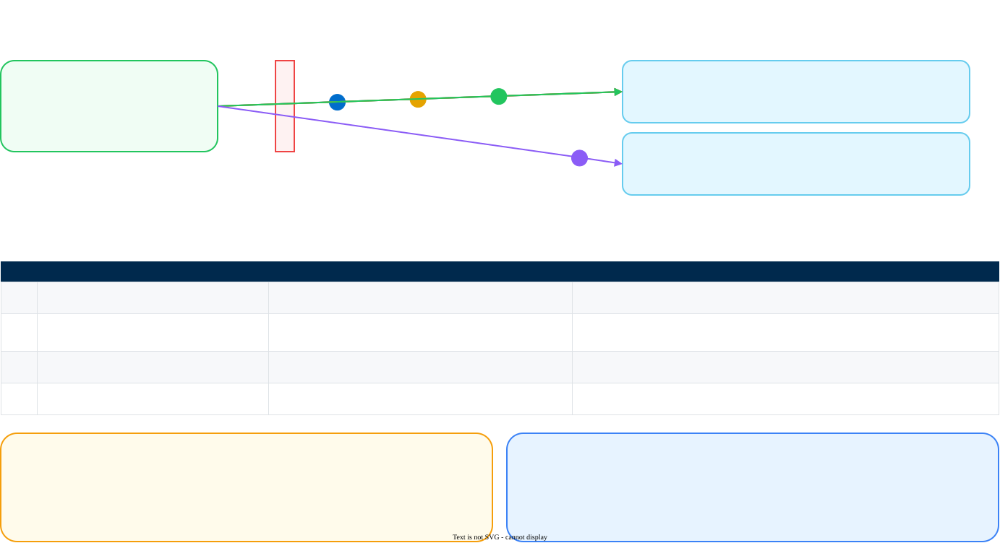
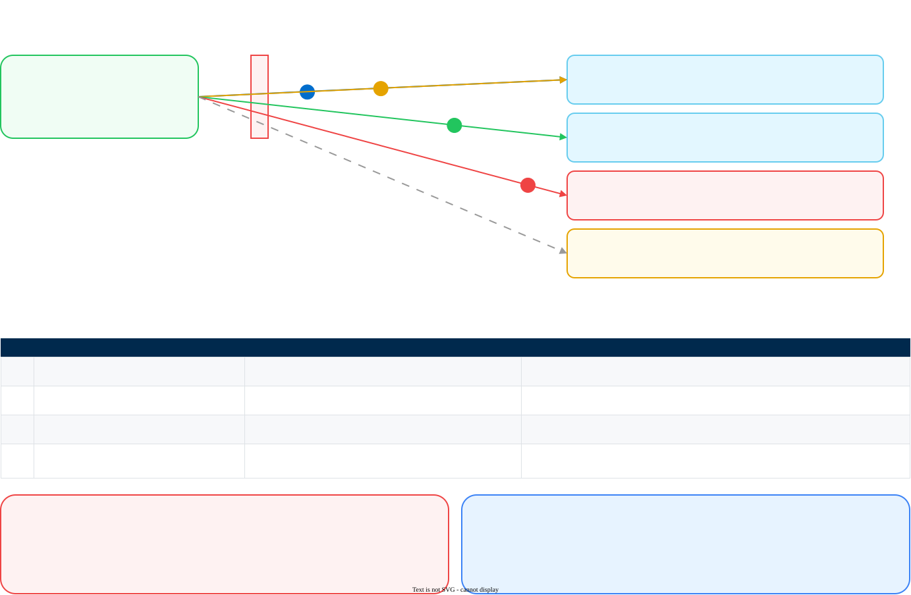

Connectivity Check Diagrams
Where each connectivity check runs from, what it crosses, and what a failure at that point means
One diagram per pillar, showing the ladder of checks the connectivity validator generates. Read the diagram first to see the shape of what you are testing, then generate the commands and run them.
A numbered badge on an arrow maps to the matching row in the table beneath it, which says what that check proves and what a failure at it means. A dashed grey path is conditional: a real path, reached only when that pillar's optional case applies.
The green boxes on the left are places in your own environment. Which one a check runs from is the part most often got wrong, because egress policy, proxies and TLS inspection belong to a network location rather than to an account.
AI Red Teaming
Four tenant checks from an administrator's machine, and a fifth from inside the Kubernetes cluster that will host the Network Channel client. The fifth is separate because that cluster's own egress policy is the thing being tested, and it is invisible from anywhere else on the network.

Generate these commands · Red Teaming readiness · Full guide
AI Gateway
Two directions, and a guide to which machine tests which. Your application reaching the gateway is one path; the gateway reaching its own control plane, the providers and the scan endpoint is another, and only the second explains a gateway that reports healthy while every request fails.

Generate these commands · AI Gateway readiness · Connectivity reference
API Intercept
The pillar where location matters most. The scan call is made by your own application code, so a restrictive egress policy on a namespace is invisible from anywhere except inside that namespace.

Generate these commands · API Intercept readiness · Full guide
AI Model Scanning
Four hops from the machine that will run the scanning agent. The fourth is the one worth running first, because a private package index that an internal mirror will not pass through is a policy change measured in weeks.

Generate these commands · Model Scanning readiness · Full guide